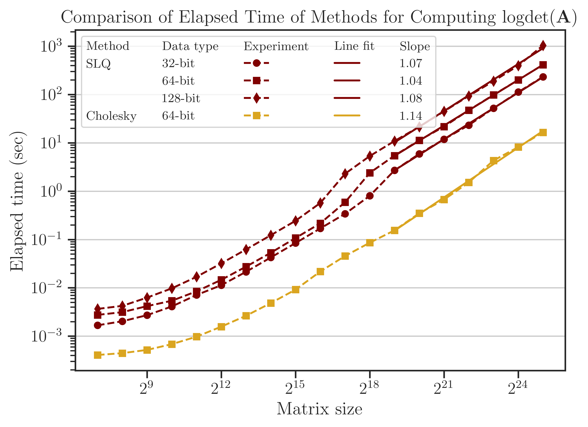
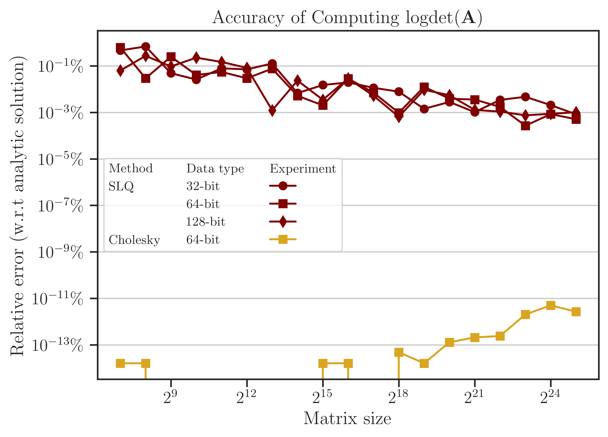
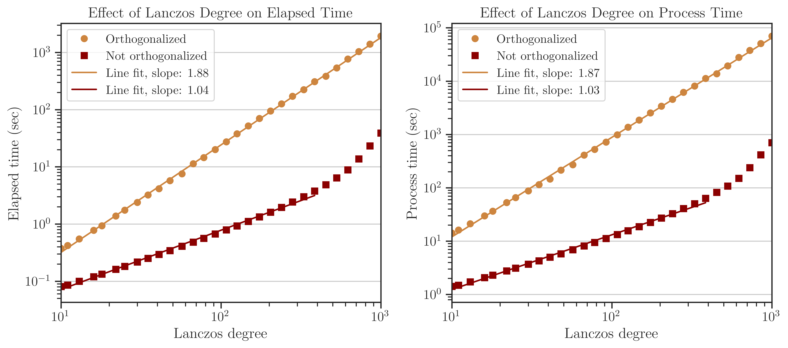

Comparison of Randomized Algorithms#
imate implements various deterministic and randomized algorithms on dense and sparse matrices. The goal of the following numerical experiments is to compare the performance, scalability, and accuracy of these algorithms.
Test Description#
In the following numerical experiments compute
and
where \(\mathbf{A}\) is symmetric and positive-definite. The above quantities is a computationally expensive expression that frequently appears in the likelihood funcitons and their Jacobian and Hessian.
Algorithms#
The following Algorithms were tested on Intel(R) Xeon(R) CPU E5-2670 v3 with 24 threads.
- Cholesky Decomposition#
This method is implemented by the following functions:
imate.logdet(method=’cholesky’) to compute (1).
imate.traceinv(method=’cholesky’) to compute (2).
The complexity of computing (1) is close to \(\mathcal{O}((\mathrm{nnz}(\mathbf{L}))^{\frac{3}{2}})\) (see for instance [1]) where \(\mathbf{A} = \mathbf{L} \mathbf{L}^{\intercal}\). The complexity of computing (2) for sparse matrices is \(\mathcal{O}(n^2)\) where \(n\) is the matrix size.
- Hutchinson Method#
This method is only applied to (2) and implemented by imate.traceinv(method=’hutchinson’) fucntion. The complexity of this method is:
\[\mathcal{O}(\mathrm{nnz}(\mathbf{A})s),\]where \(s\) is the number of Monte-Carlo iterations in the algorithm and \(\rho\) is the sparse matrix density. In this experiemnt, \(s = 80\).
- Stochastic Lanczos Quadrature Method#
This method is implemented by:
imate.logdet(method=’cholesky’) to compute (1).
imate.traceinv(method=’cholesky’) to compute (2).
The complexity of this method is:
\[\mathcal{O} \left( (\mathrm{nnz}(\mathbf{A}) l + n l^2) s \right),\]where \(l\) is the number of Lanczos iterations, and \(s\) is the number of Monte-Carlo iterations. The numerical experiment is performed with \(l=80\) and \(s=200\).
Arithmetic Types#
The benchmark test also examines the performance and accuracy of imate on various arithmetic types of the matrix data. To this end, the matrices that are described below are re-cast into 32-bit, 64-bit, and 128-bit floating point types.
Note
Supporting 128-bit data types is one of the features if imate, which is often not available in numerical libraries, such as OpenBLAS.
Test on Dense Matrices#
The Gramian matrix \(\mathbf{A} = \mathbf{B}^{\intercal} \mathbf{B}\) is considered for the test where \(\mathbf{B}\) is a bi-diagonal Toeplitz matrix defined by
The above matrix can be generated by imate.toeplitz() function. In this experiment, \(a = 2\), \(b = 1\), and the matrix size is varied by powers of two, \(n = 2^8, 2^9, \dots, 2^{14}\).
An advantage of using the above matrix is that an analytic formula for (2) for \(n \gg 1\) is known by
where \(q = b/a\). See imate.sample_matrices.toeplitz_traceinv() for details. The above analytic formula is used as the benchmark solution to test the accuracy of the results.
Process Time#
The processing time of the computations is shown in the figure below. The speed of computation with and without using OpenBLAS for \(n < 10^{12}\) shows mixed results. However, at \(n \geq 2^{12}\), the speed of computation without using OpenBLAS is consistently superior by a factor of roughly 1.5 to 2.5.
Results#
 {kind=link}
{kind=link}


Algorithm Parameters#


How to Reproduce Results#
Prepare Matrix Data#
Download all the above-mentioned sparse matrices from SuiteSparse Matrix Collection. For instance, download
Queen_4147.matfrom |Queen_4147|_.Run
/imate/benchmark/matrices/read_matrix.mto extract sparse matrix data fromQueen_4147.mat:read_matrix('Queen_4147.mat');
Run
/imate/benchmark/matrices/read_matrix.pyto convert the outputs of the above Octave script to generate a python pickle file:read_matrix.py Queen_4147 float32 # to generate 32-bit data read_matrix.py Queen_4147 float64 # to generate 64-bit data read_matrix.py Queen_4147 float128 # to generate 128-bit data
The output of the above script will be stored in
/imate/benchmark/matrices/.
Perform Numerical Test#
Run each of the scripts described below with and without using OpenBLAS support in imate to compare their performance. The default installation of imate (if you installed it with pip or cond) does not come with OpenBLAS support. To use OpenBLAS, imate has to be compiled from the source.
Tip
To compile imate using OpenBLAS, export the environment variable:
export USE_CBLAS=1
or set USE_CBLAS=1 in /imate/_definitions/definition.h. By default, USE_CBLAS is set to 0. Then, recompile imate. See Compile from Source.
Dense Matrices, Run Locally#
Run /imate/benchmark/scripts/benchmark_openblas_dense.py as follows:
To reproduce the results without OpenBLAS:
cd /imate/benchmark/scripts python ./benchmark_openblas_dense.py -o False
To reproduce the results with OpenBLAS, first, compile imate with OpenBLAS (see above), then run:
cd /imate/benchmark/scripts python ./benchmark_openblas_dense.py -o True
Dense Matrices, Submit to Cluster with SLURM#
Submit the job file /imate/benchmark/jobfiles/jobfile_benchmark_openblas_dense.sh by
cd /imate/benchmark/jobfiles
sbatch jobfile_benchmark_openblas_dense.sh
To use with or without OpenBLAS, modify the above job files (uncomment lines the corresponding).
Sparse Matrices, Run Locally#
Run /imate/benchmark/scripts/benchmark_speed.py script as follows:
cd /imate/benchmark/scripts
python ./benchmark_speed.py -c
Sparse Matrices, Submit to Cluster with SLURM#
Submit the job file /imate/benchmark/jobfiles/jobfile_benchmark_speed_cpu.sh by
cd /imate/benchmark/jobfiles
sbatch jobfile_benchmark_speed_cpu.sh
Plot Results#
Run
/imate/benchmark/notebooks/plot_benchmark_openblas_dense.ipynbto generate plots for the dense matrices shown in the aboveRun
/imate/benchmark/notebooks/plot_benchmark_openblas_sparse.ipynbto generate plots for the sparse matrices shown in the above
These notebooks stores svg plots in /imate/benchmark/svg_plots/.